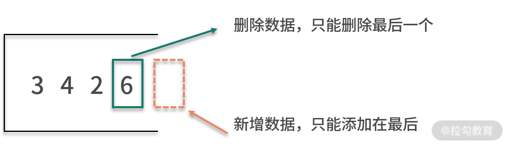
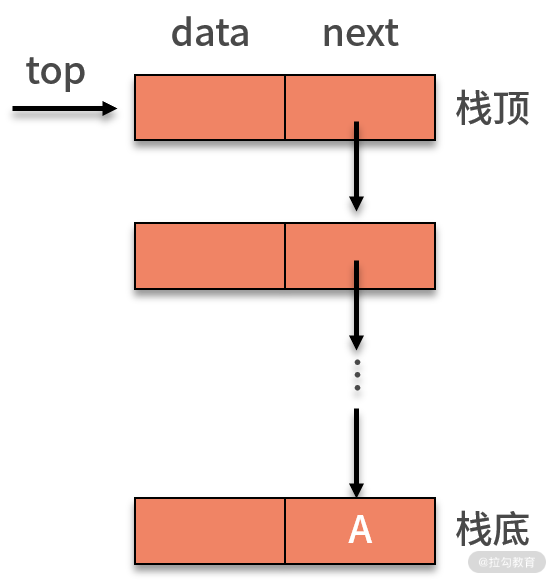
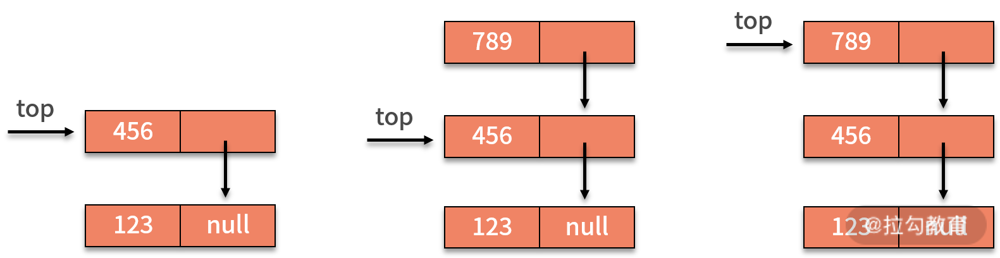

- 00 数据结构与算法，应该这样学！.md.html
- 01 复杂度：如何衡量程序运行的效率？.md.html
- 02 数据结构：将“昂贵”的时间复杂度转换成“廉价”的空间复杂度.md.html
- 03 增删查：掌握数据处理的基本操作,以不变应万变.md.html
- 04 如何完成线性表结构下的增删查？.md.html
- 05 栈：后进先出的线性表，如何实现增删查？.md.html
- 06 队列：先进先出的线性表，如何实现增删查？.md.html
- 07 数组：如何实现基于索引的查找？.md.html
- 08 字符串：如何正确回答面试中高频考察的字符串匹配算法？.md.html
- 09 树和二叉树：分支关系与层次结构下，如何有效实现增删查？.md.html
- 10 哈希表：如何利用好高效率查找的“利器”？.md.html
- 11 递归：如何利用递归求解汉诺塔问题？.md.html
- 12 分治：如何利用分治法完成数据查找？.md.html
- 13 排序：经典排序算法原理解析与优劣对比.md.html
- 14 动态规划：如何通过最优子结构，完成复杂问题求解？.md.html
- 15 定位问题才能更好地解决问题：开发前的复杂度分析与技术选型.md.html
- 16 真题案例（一）：算法思维训练.md.html
- 17 真题案例（二）：数据结构训练.md.html
- 18 真题案例（三）：力扣真题训练.md.html
- 19 真题案例（四）：大厂真题实战演练.md.html
- 20 代码之外，技术面试中你应该具备哪些软素质？.md.html
- 21 面试中如何建立全局观，快速完成优质的手写代码？.md.html
- 加餐 课后练习题详解.md.html
- 捐赠
05 栈：后进先出的线性表，如何实现增删查？
通过前面课时的学习，相信你已经掌握了线性表的基本原理，以及如何完成线性表结构下的增删查操作。
线性表是使用非常广泛的一类数据结构，它对数据的顺序非常敏感，而且它对数据的增删操作非常灵活。在有序排列的数据中，可以灵活的执行增删操作，就好像是为排好队的数据增加了插队的入口。这既是灵活性也是缺陷，原因在于它的灵活性在某种程度上破坏了数据的原始顺序。在某些需要严格遵守数据处理顺序的场景下，我们就需要对线性表予以限制了。经过限制后的线性表，它们通常会被赋予一些新的名字。这一课时，我们就来学习其中一个限制后的线性表–栈。
栈是什么
你需要牢记一点，栈是一种特殊的线性表。栈与线性表的不同，体现在增和删的操作。具体而言，栈的数据结点必须后进先出。后进的意思是，栈的数据新增操作只能在末端进行，不允许在栈的中间某个结点后新增数据。先出的意思是，栈的数据删除操作也只能在末端进行，不允许在栈的中间某个结点后删除数据。
也就是说，栈的数据新增和删除操作只能在这个线性表的表尾进行，即在线性表的基础上加了限制。如下图所示：

因此，栈是一种后进先出的线性表。栈对于数据的处理，就像用砖头盖房子的过程。对于盖房子而言，新的砖头只能放在前一个砖头上面；而对于拆房子而言，我们需要从上往下拆砖头。

宏观上来看，与数组或链表相比，栈的操作更为受限，那为什么我们要用这种受限的栈呢？其实，单纯从功能上讲，数组或者链表可以替代栈。然而问题是，数组或者链表的操作过于灵活，这意味着，它们过多暴露了可操作的接口。这些没有意义的接口过多，当数据量很大的时候就会出现一些隐藏的风险。一旦发生代码 bug 或者受到攻击，就会给系统带来不可预知的风险。虽然栈限定降低了操作的灵活性，但这也使得栈在处理只涉及一端新增和删除数据的问题时效率更高。
举个实际的例子，浏览器都有页面前进和后退功能，这就是个很典型的后进先出的场景。假设你先后访问了五个页面，分别标记为 1、2、3、4、5。当前你在页面 5，如果执行两次后退，则退回到了页面 3，如果再执行一次前进，则到了页面 4。处理这里的页面链接存储问题，栈就应该是我们首选的数据结构。

栈既然是线性表，那么它也包含了表头和表尾。不过在栈结构中，由于其操作的特殊性，会对表头和表尾的名字进行改造。表尾用来输入数据，通常也叫作栈顶（top）；相应地，表头就是栈底（bottom）。栈顶和栈底是用来表示这个栈的两个指针。跟线性表一样，栈也有顺序表示和链式表示，分别称作顺序栈和链栈。
栈的基本操作
如何通过栈这个后进先出的线性表，来实现增删查呢？初始时，栈内没有数据，即空栈。此时栈顶就是栈底。当存入数据时，最先放入的数据会进入栈底。接着加入的数据都会放入到栈顶的位置。如果要删除数据，也只能通过访问栈顶的数据并删除。对于栈的新增操作，通常也叫作 push 或压栈。对于栈的删除操作，通常也叫作 pop 或出栈。对于压栈和出栈，我们分别基于顺序栈和链栈进行讨论。

顺序栈
栈的顺序存储可以借助数组来实现。一般来说，会把数组的首元素存在栈底，最后一个元素放在栈顶。然后定义一个 top 指针来指示栈顶元素在数组中的位置。假设栈中只有一个数据元素，则 top = 0。一般以 top 是否为 -1 来判定是否为空栈。当定义了栈的最大容量为 StackSize 时，则栈顶 top 必须小于 StackSize。
当需要新增数据元素，即入栈操作时，就需要将新插入元素放在栈顶，并将栈顶指针增加 1。如下图所示：

删除数据元素，即出栈操作，只需要 top - 1 就可以了。
对于查找操作，栈没有额外的改变，跟线性表一样，它也需要遍历整个栈来完成基于某些条件的数值查找。
链栈
关于链式栈，就是用链表的方式对栈的表示。通常，可以把栈顶放在单链表的头部，如下图所示。由于链栈的后进先出，原来的头指针就显得毫无作用了。因此，对于链栈来说，是不需要头指针的。相反，它需要增加指向栈顶的 top 指针，这是压栈和出栈操作的重要支持。

对于链栈，新增数据的压栈操作，与链表最后插入的新数据基本相同。需要额外处理的，就是栈的 top 指针。如下图所示，插入新的数据，则需要让新的结点指向原栈顶，即 top 指针指向的对象，再让 top 指针指向新的结点。

在链式栈中进行删除操作时，只能在栈顶进行操作。因此，将栈顶的 top 指针指向栈顶元素的 next 指针即可完成删除。对于链式栈来说，新增删除数据元素没有任何循环操作，其时间复杂度均为 O(1)。
对于查找操作，相对链表而言，链栈没有额外的改变，它也需要遍历整个栈来完成基于某些条件的数值查找。
通过分析你会发现，不管是顺序栈还是链栈，数据的新增、删除、查找与线性表的操作原理极为相似，时间复杂度完全一样，都依赖当前位置的指针来进行数据对象的操作。区别仅仅在于新增和删除的对象，只能是栈顶的数据结点。
栈的案例
接下来，我们一起来看两个栈的经典案例，从中你可以更深切地体会到栈所发挥出的价值。
例 1，给定一个只包括 ‘(‘，’)‘，’{‘，’}‘，’[‘，’]’ 的字符串，判断字符串是否有效。有效字符串需满足：左括号必须与相同类型的右括号匹配，左括号必须以正确的顺序匹配。例如，{ [ ( ) ( ) ] } 是合法的，而 { ( [ ) ] } 是非法的。
这个问题很显然是栈发挥价值的地方。原因是，在匹配括号是否合法时，左括号是从左到右依次出现，而右括号则需要按照“后进先出”的顺序依次与左括号匹配。因此，实现方案就是通过栈的进出来完成。
具体为，从左到右顺序遍历字符串。当出现左括号时，压栈。当出现右括号时，出栈。并且判断当前右括号，和被出栈的左括号是否是互相匹配的一对。如果不是，则字符串非法。当遍历完成之后，如果栈为空。则合法。如下图所示：

代码如下：
public static void main(String[] args) {
String s = "{[()()]}";
System.out.println(isLegal(s));
}
private static int isLeft(char c) {
if (c == '{' || c == '(' || c == '[') {
return 1;
} else {
return 2;
}
}
private static int isPair(char p, char curr) {
if ((p == '{' && curr == '}') || (p == '[' && curr == ']') || (p == '(' && curr == ')')) {
return 1;
} else {
return 0;
}
}
private static String isLegal(String s) {
Stack stack = new Stack();
for (int i = 0; i < s.length(); i++) {
char curr = s.charAt(i);
if (isLeft(curr) == 1) {
stack.push(curr);
} else {
if (stack.empty()) {
return "非法";
}
char p = (char) stack.pop();
if (isPair(p, curr) == 0) {
return "非法";
}
}
}
if (stack.empty()) {
return "合法";
} else {
return "非法";
}
}
例 2，浏览器的页面访问都包含了后退和前进功能，利用栈如何实现？
我们利用浏览器上网时，都会高频使用后退和前进的功能。比如，你按照顺序先后访问了 5 个页面，分别标记为 1、2、3、4、5。现在你不确定网页 5 是不是你要看的网页，需要回退到网页 3，则需要使用到两次后退的功能。假设回退后，你发现网页 4 有你需要的信息，那么就还需要再执行一次前进的操作。
为了支持前进、后退的功能，利用栈来记录用户历史访问网页的顺序信息是一个不错的选择。此时需要维护两个栈，分别用来支持后退和前进。当用户访问了一个新的页面，则对后退栈进行压栈操作。当用户后退了一个页面，则后退栈进行出栈，同时前进栈执行压栈。当用户前进了一个页面，则前进栈出栈，同时后退栈压栈。我们以用户按照 1、2、3、4、5、4、3、4 的浏览顺序为例，两个栈的数据存储过程，如下图所示：

总结
好的，这节课的内容就到这里了。这一节的内容主要围绕栈的原理、栈对于数据的增删查操作展开。
栈继承了线性表的优点与不足，是个限制版的线性表。限制的功能是，只允许数据从栈顶进出，这也就是栈后进先出的性质。不管是顺序栈还是链式栈，它们对于数据的新增操作和删除操作的时间复杂度都是 O(1）。而在查找操作中，栈和线性表一样只能通过全局遍历的方式进行，也就是需要 O(n) 的时间复杂度。
栈具有后进先出的特性，当你面对的问题需要高频使用新增、删除操作，且新增和删除操作的数据执行顺序具备后来居上的相反关系时，栈就是个不错的选择。例如，浏览器的前进和后退，括号匹配等问题。栈在代码的编写中有着很广泛的应用，例如，大多数程序运行环境都有的子程序的调用，函数的递归调用等。这些问题都具有后进先出的特性。关于递归，我们会在后续的课程单独进行分析。
练习题
下面我们给出本课时的练习题。在上一课时中，我们的习题是，给定一个包含 n 个元素的链表，现在要求每 k 个节点一组进行翻转，打印翻转后的链表结果。其中，k 是一个正整数，且 n 可被 k 整除。
例如，链表为 1 -> 2 -> 3 -> 4 -> 5 -> 6，k = 3，则打印 321654。仍然是这道题，我们试试用栈来解决它吧。
© 2019 - 2023 Liangliang Lee. Powered by gin and hexo-theme-book.